自定义课本功能说明 (20250427)
一、总体步骤
本APP支持用户新增课本，以及对现有课本进行修订。
1. 新增课本步骤：
- 在手机上，准备课本内容和目录；
- 在APP界面新增课本；
- 按照单元、课文的结构，将课本内容复制到APP对应的界面；
- 利用软件所带功能，对课文文字、拼音等进行校正；
- 确认课本内容保存；
- 在课本列表中，点击课本，进行使用。
2. 现有课本修订步骤：
- 在课本列表中，点击想修订的课本的编辑图标；
- 参考新增课本的步骤，在APP页面上，依次编辑课文内容，校正拼音，最终保存。
二、新增课本详细步骤
（一）准备课本内容
1. 准备课本目录
参考学生课本目录，每个课本按照“单元、课文”的结构制定。例如课本“毛毛的识字课本”的单元和课文如下：
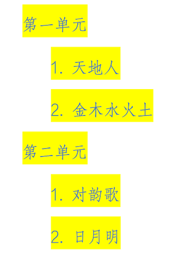
2. 准备每篇课文的内容
在手机的文本编辑器，或者其他能保存文字的软件中，准备好课文内容，如课文“对韵歌”：
云对雨，雪对风，花对树，鸟对虫。山清对水秀，柳绿对花红。
3. 准备每篇课文内容的拼音
可以利用“豆包”、“文心一言”、“元宝”等AI软件，快速生成课文的拼音。例如在“豆包”中输入：
请为以下文字标注拼音：“ 云对雨，雪对风，花对树，鸟对虫。山清对水秀，柳绿对花红。”
严格遵守以下规则：
1. 拼音直接显示在字的后面，拼音前后不要加括号、分号等分隔符。
2. 按照拼音的儿化音规则输出；
3. 根据上下文确定多音字的拼音；
4. 词汇末尾字，如应该轻声，需要为轻声。
将得到以下输出：
云 yún 对 duì 雨 yǔ，雪 xuě 对 duì 风 fēng，花 huā 对 duì 树 shù，鸟 niǎo 对 duì 虫 chóng。山 shān 清 qīng 对 duì 水 shuǐ 秀 xiù，柳 liǔ 绿 lǜ 对 duì 花 huā 红 hóng。
将生成的拼音保存好备用。
（二）增加自定义课本
- 打开APP，进入首页后，点击左下角图标，进入课本列表；
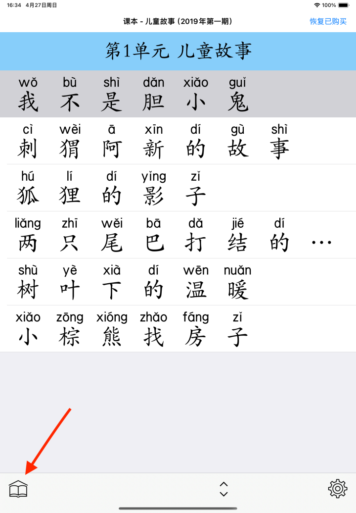
- 点击最下方工具栏的图标，进入新增课本的信息页面；
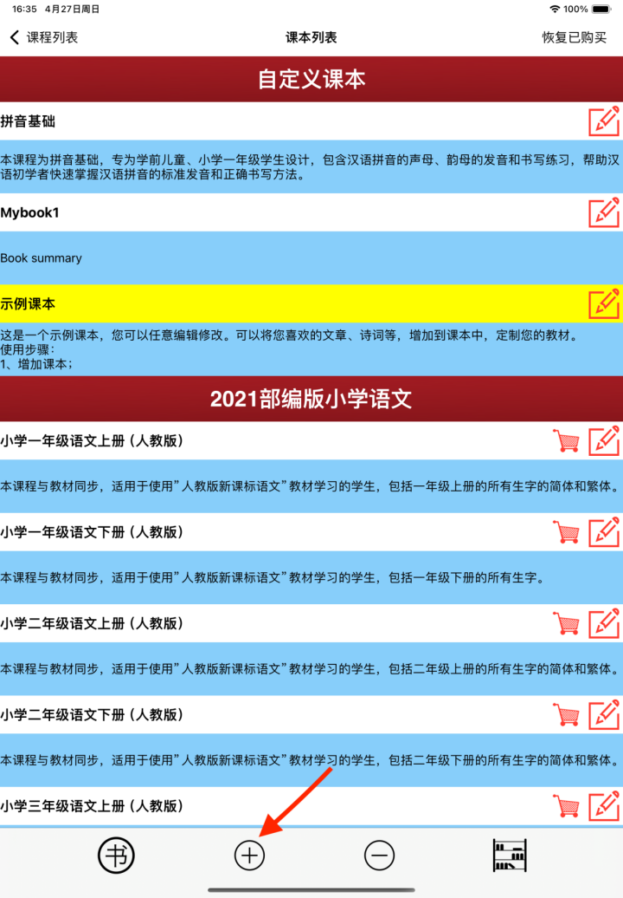
- 输入合适的课本标题，课本内容描述内容。例如：
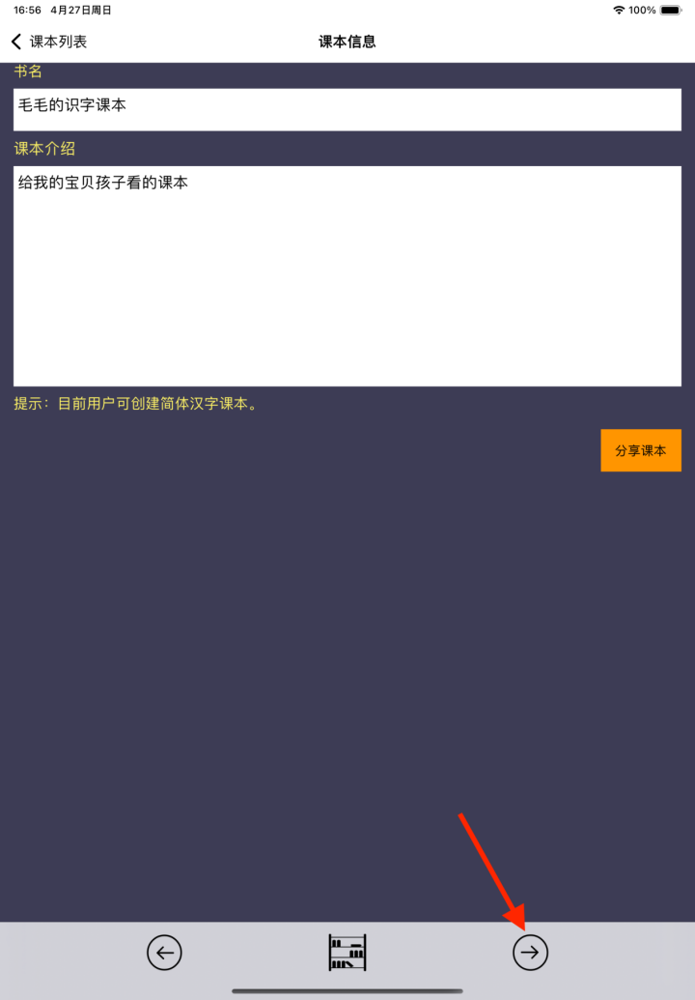
- 点击最下方工具栏的图标，进入下一页。
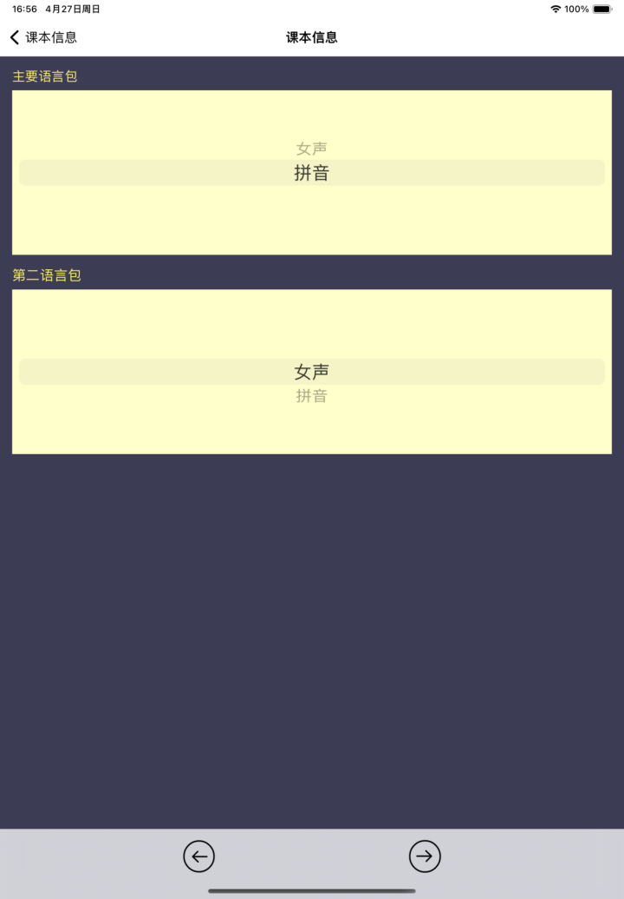
（三）增加单元
- 进入示例的课本页面，有示例的单元名称、课程名称。
- 点击按钮，进入编辑单元名和课程名的页面。
- 输入合适的单元标题、课程标题。例如：

- 点击最下方工具栏的图标，进入下一页。
（四）编辑课文内容
- 将含拼音的课文内容，粘贴到文本框内。
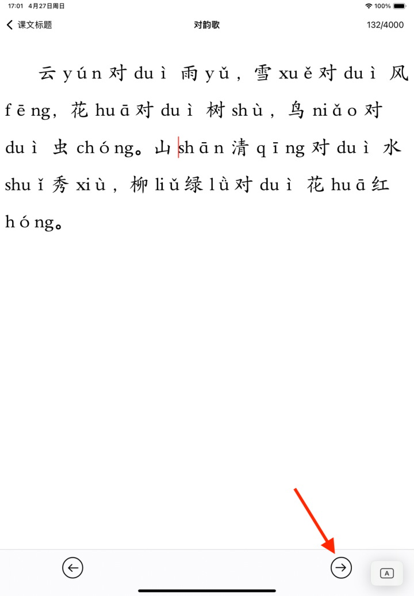
- 点击最下方工具栏的
 图标，进入下一页。
图标，进入下一页。
（五）校正课文拼音
- 查看每个字的拼音是否正确。
（1）多音字是“橙褐色”，单音字是“绿色”。
（2）长按一个字2秒钟，可以切换本字的多个发音。
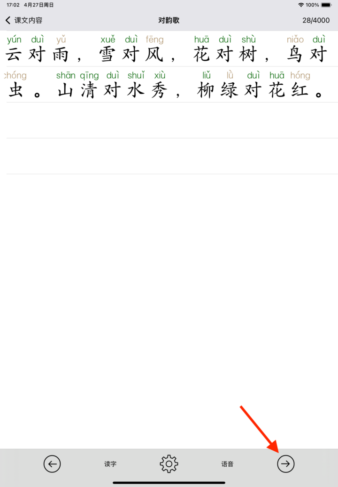
- 所有字的拼音正确后，可以进行简单的排版。
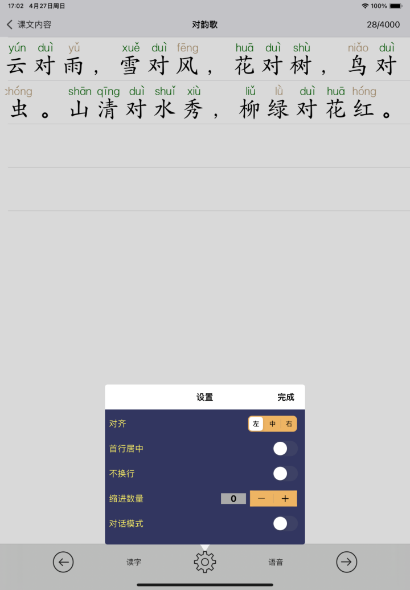
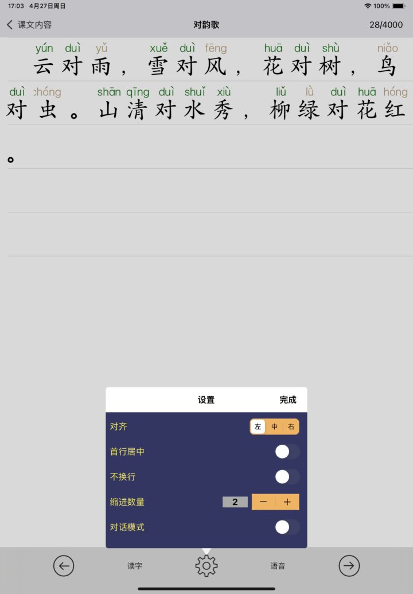
- 可以点击“读字”按钮，检查每个字的发音是否正确。
- 可以点击“语音”按钮，使用siri朗读，进行校对。
- 点击最下方工具栏的
 图标，进入下一页。
图标，进入下一页。
（六）明确“会读”、“会写”要求的文字
对于课文中，需要学生“会读”、“会写”的字，输入到上面的文本框内，下方会显示对应字的拼音。
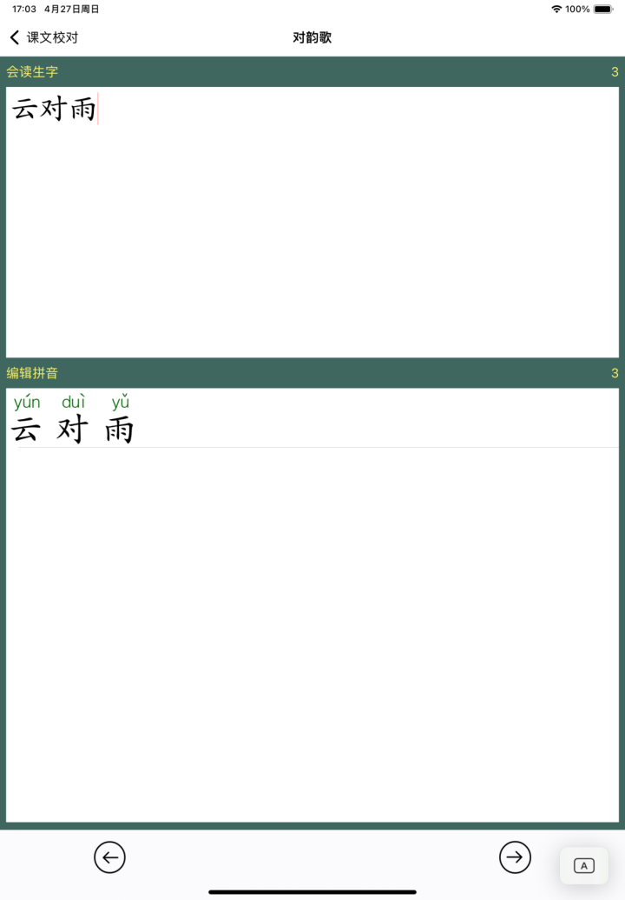
（七）最终确认
- 本页以列表形式，显示每个字的拼音、会读、会写的设置，可以查看是否准确，如有错误，点击页面左上方的“会写生字”按钮，返回前一页，进行修改。
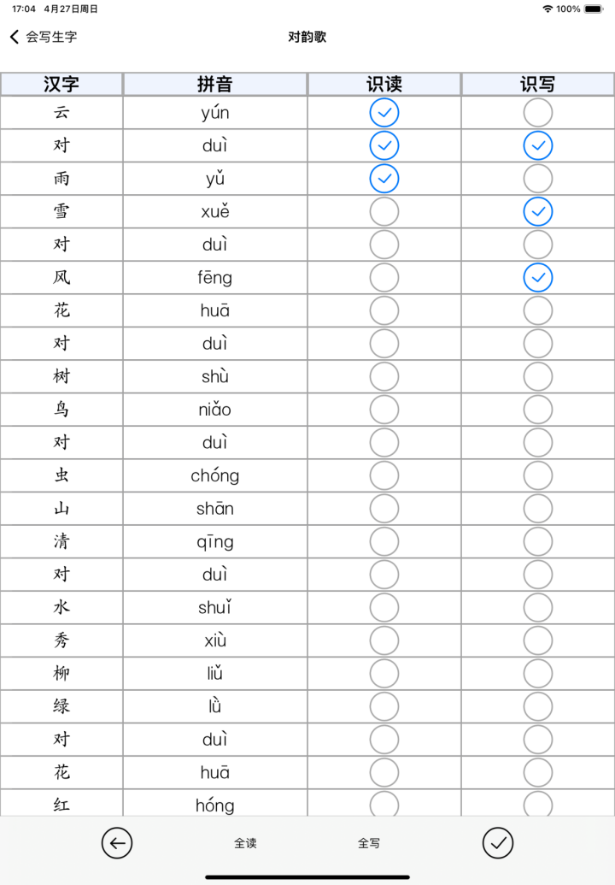
确认所有的内容正确后，点击图标，完成本课程编辑。
- 所有课程编辑完成后，点击“完成”按钮，生成课本。
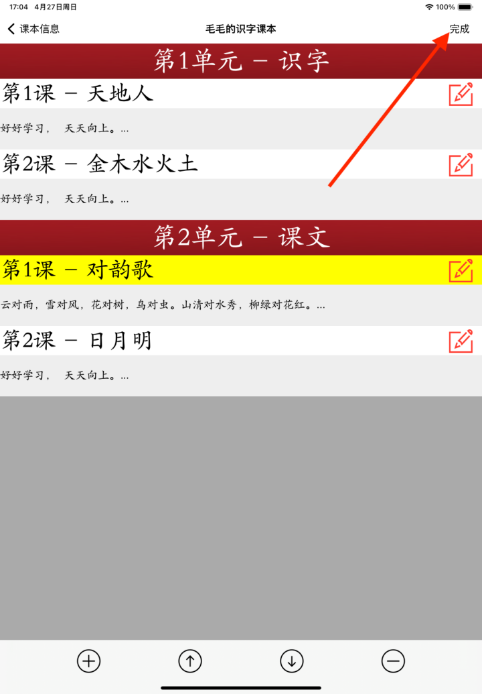
- 在“课本列表”页面，可以点击新课本，进行学习。
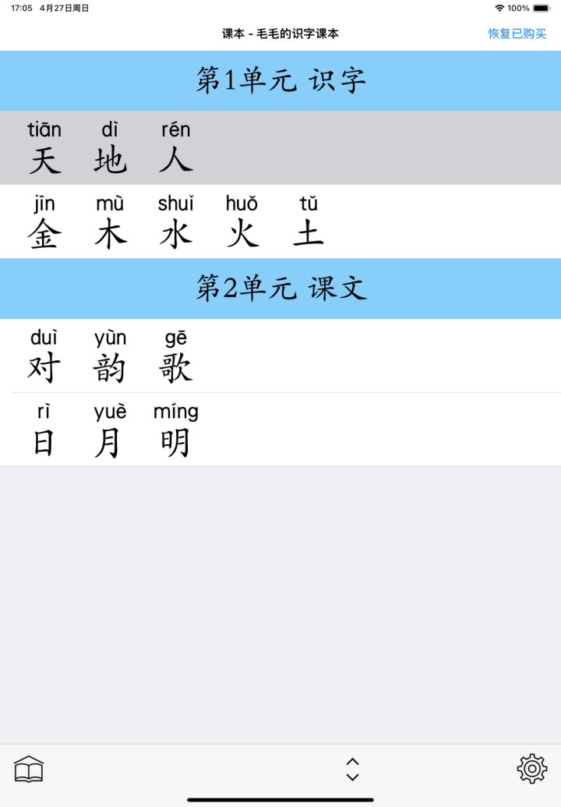
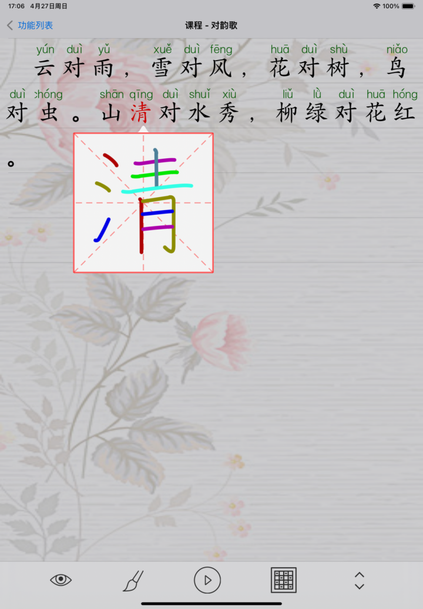

三、编辑现有课本
点击课本对应的图标，进入课本编辑模式，操作步骤与新增课本一致。
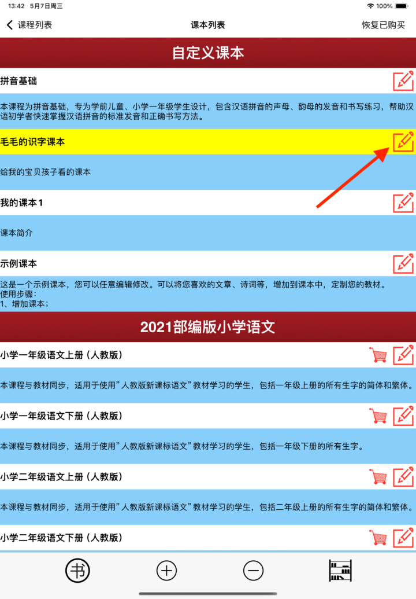
自訂課本功能說明 (20250427)
一、總體步驟
本APP支援使用者新增課本，以及對現有課本進行修訂。
1. 新增課本步驟：
- 在手機上，準備課本內容和目錄；
- 在APP界面新增課本；
- 按照單元、課文的結構，將課本內容複製到APP對應的界面；
- 利用軟件所帶功能，對課文文字、拼音等進行校正；
- 確認課本內容保存；
- 在課本列表中，點擊課本，進行使用。
2. 現有課本修訂步驟：
- 在課本列表中，點擊想修訂的課本的編輯圖標；
- 參考新增課本的步驟，在APP頁面上，依次編輯課文內容，校正拼音，最終保存。
二、新增課本詳細步驟
（一）準備課本內容
1. 準備課本目錄
參考學生課本目錄，每個課本按照「單元、課文」的結構制定。例如課本「毛毛的識字課本」的單元和課文如下：
2. 準備每篇課文的內容
在手機的文本編輯器，或者其他能保存文字的軟件中，準備好課文內容，如課文「對韻歌」：
雲對雨，雪對風，花對樹，鳥對蟲。山清對水秀，柳綠對花紅。
3. 準備每篇課文內容的拼音
可以利用「豆包」、「文心一言」、「元寶」等AI軟件，快速生成課文的拼音。例如在「豆包」中輸入：
請為以下文字標注拼音：「 雲對雨，雪對風，花對樹，鳥對蟲。山清對水秀，柳綠對花紅。」
嚴格遵守以下規則：
1. 拼音直接顯示在字的後面，拼音前後不要加括號、分號等分隔符。
2. 按照拼音的兒化音規則輸出；
3. 根據上下文確定多音字的拼音；
4. 詞彙末尾字，如應該輕聲，需要為輕聲。
將得到以下輸出：
雲 yún 對 duì 雨 yǔ，雪 xuě 對 duì 風 fēng，花 huā 對 duì 樹 shù，鳥 niǎo 對 duì 蟲 chóng。山 shān 清 qīng 對 duì 水 shuǐ 秀 xiù，柳 liǔ 綠 lǜ 對 duì 花 huā 紅 hóng。
將生成的拼音保存好備用。
（二）增加自訂課本
- 打開APP，進入首頁後，點擊左下角圖標，進入課本列表；
- 點擊最下方工具列的圖標，進入新增課本的信息頁面；
- 輸入合適的課本標題，課本內容描述內容。例如：
- 點擊最下方工具列的圖標，進入下一頁。
（三）增加單元
- 進入示例的課本頁面，有示例的單元名稱、課程名稱。
- 點擊按鈕，進入編輯單元名和課程名的頁面。
- 輸入合適的單元標題、課程標題。例如：
- 點擊最下方工具列的圖標，進入下一頁。
（四）編輯課文內容
- 將含拼音的課文內容，粘貼到文本框內。
- 點擊最下方工具列的圖標，進入下一頁。
（五）校正課文拼音
- 查看每個字的拼音是否正確。
（1）多音字是「橙褐色」，單音字是「綠色」。
（2）長按一個字2秒鐘，可以切換本字的多個發音。
- 所有字的拼音正確後，可以進行簡單的排版。
- 可以點擊「讀字」按鈕，檢查每個字的發音是否正確。
- 可以點擊「語音」按鈕，使用siri朗讀，進行校對。
- 點擊最下方工具列的圖標，進入下一頁。
（六）明確「會讀」、「會寫」要求的文字
對於課文中，需要學生「會讀」、「會寫」的字，輸入到上面的文本框內，下方會顯示對應字的拼音。
（七）最終確認
- 本頁以列表形式，顯示每個字的拼音、會讀、會寫的設置，可以查看是否準確，如有錯誤，點擊頁面左上方的「會寫生字」按鈕，返回前一頁，進行修改。
確認所有的內容正確後，點擊圖標，完成本課程編輯。
- 所有課程編輯完成後，點擊「完成」按鈕，生成課本。
- 在「課本列表」頁面，可以點擊新課本，進行學習。
三、編輯現有課本
點擊課本對應的圖標，進入課本編輯模式，操作步驟與新增課本一致。
カスタム教科書機能説明 (20250427)
一、全体手順
本APPはユーザーが教科書を新規作成したり、既存の教科書を修正したりすることをサポートしています。
1. 新規教科書作成手順：
- 携帯電話で、教科書の内容と目次を準備する；
- APP画面で新規教科書を作成する；
- ユニット、課文の構造に従って、教科書の内容をAPPの対応する画面にコピーする；
- ソフトウェアの機能を利用して、課文の文字、拼音などを校正する；
- 教科書の内容を確認して保存する；
- 教科書リストで、教科書をクリックして使用する。
2. 既存教科書修正手順：
- 教科書リストで、修正したい教科書の編集アイコンをクリックする；
- 新規教科書の手順を参考に、APP画面で順番に課文内容を編集し、拼音を校正して最終的に保存する。
二、新規教科書詳細手順
（一）教科書内容の準備
1. 教科書目次の準備
学生用教科書の目次を参考に、各教科書は「ユニット、課文」の構造に従って作成します。例えば教科書「毛毛の識字教科書」のユニットと課文は以下の通りです：
2. 各課文内容の準備
携帯電話のテキストエディターまたは他の文字を保存できるソフトウェアで、課文の内容を準備します。例えば課文「対韻歌」：
雲对雨，雪对风，花对树，鸟对虫。山清对水秀，柳绿对花红。
3. 各課文内容の拼音の準備
「豆包」、「文心一言」、「元宝」などのAIソフトウェアを利用して、課文の拼音を迅速に生成できます。例えば「豆包」に次のように入力します：
次の文字に拼音を付けてください：「 雲对雨，雪对风，花对树，鸟对虫。山清对水秀，柳绿对花红。」
次の規則を厳格に遵守してください：
1. 拼音は直接文字の後ろに表示し、拼音の前後に括弧、セミコロンなどの区切り記号を付けないでください。
2. 拼音の兒化音の規則に従って出力する；
3. 前後関係に基づいて多音字の拼音を決定する；
4. 語彙の末尾の文字は、軽声であるべき場合は軽声にする。
次のような出力が得られます：
雲 yún 对 duì 雨 yǔ，雪 xuě 对 duì 风 fēng，花 huā 对 duì 树 shù，鸟 niǎo 对 duì 虫 chóng。山 shān 清 qīng 对 duì 水 shuǐ 秀 xiù，柳 liǔ 绿 lǜ 对 duì 花 huā 红 hóng。
生成した拼音を保存して備用します。
（二）カスタム教科書の追加
- APPを開き、ホームページに入った後、左下のアイコンをクリックして、教科書リストに入る；
- 最下部のツールバーのアイコンをクリックして、新規教科書の情報ページに入る；
- 適切な教科書のタイトルと内容の説明を入力します。例えば：
- 最下部のツールバーのアイコンをクリックして、次のページに進む。
（三）ユニットの追加
- 例の教科書ページに入ると、例のユニット名と授業名が表示されています。
- ボタンをクリックして、ユニット名と授業名を編集するページに入る。
- 適切なユニットのタイトルと授業のタイトルを入力します。例えば：
- 最下部のツールバーのアイコンをクリックして、次のページに進む。
（四）課文内容の編集
- 拼音付きの課文内容をテキストボックスに貼り付けます。
- 最下部のツールバーのアイコンをクリックして、次のページに進む。
（五）課文拼音の校正
- 各文字の拼音が正しいかどうかを確認します。
（1）多音字は「橙褐色」で、単音字は「綠色」です。
（2）文字を2秒間長押しすると、その文字の複数の発音を切り替えることができます。
- すべての文字の拼音が正しければ、簡単な排版を行うことができます。
- 「読字」ボタンをクリックして、各文字の発音が正しいかどうかを確認できます。
- 「音声」ボタンをクリックして、siriで朗読させて校正することができます。
- 最下部のツールバーのアイコンをクリックして、次のページに進む。
（六）「読める」、「書ける」要求の文字を明確にする
課文中で、学生が「読める」、「書ける」必要がある文字を上のテキストボックスに入力すると、下部に対応する文字の拼音が表示されます。
（七）最終確認
- 本ページでは、各文字の拼音、読める、書けるの設定がリスト形式で表示されます。正確かどうかを確認できます。誤りがあれば、ページ左上の「会写生字」ボタンをクリックして前のページに戻り、修正を行ってください。
すべての内容が正しいことを確認した後、アイコンをクリックして、本授業の編集を完了します。
- すべての授業の編集が完了した後、「完成」ボタンをクリックして教科書を生成します。
- 「教科書リスト」ページで、新しい教科書をクリックして学習することができます。
三、既存教科書の編集
教科書に対応するアイコンをクリックして、教科書編集モードに入ります。操作手順は新規教科書と同じです。
Custom Textbook Function Instructions (20250427)
1. General Steps
This APP supports users to add new textbooks and revise existing textbooks.
1. Steps to add a new textbook:
- On your mobile phone, prepare the textbook content and table of contents;
- Add a new textbook in the APP interface;
- Copy the textbook content to the corresponding interface of the APP according to the structure of units and texts;
- Use the functions of the software to correct the text, pinyin, etc. of the text;
- Confirm and save the textbook content;
- In the textbook list, click the textbook to use it.
2. Steps to revise an existing textbook:
- In the textbook list, click the edit icon of the textbook you want to revise;
- Refer to the steps of adding a new textbook, edit the text content in sequence on the APP page, correct the pinyin, and finally save.
2. Detailed steps to add a new textbook
(I) Prepare textbook content
1. Prepare the textbook table of contents
Refer to the student textbook table of contents, each textbook is formulated according to the structure of "units and texts". For example, the units and texts of the textbook"Maomao's Character Recognition Textbook"are as follows:
2. Prepare the content of each text
In the text editor of your mobile phone or other software that can save text, prepare the text content, such as the text"Antithetical Rhyme Song":
云对雨，雪对风，花对树，鸟对虫。山清对水秀，柳绿对花红。
3. Prepare pinyin for each text content
You can use AI software such as "Doubao", "Wenxin Yiyan", and "Yuanbao" to quickly generate pinyin for the text. For example, enter in "Doubao":
Please mark pinyin for the following text: " 云对雨，雪对风，花对树，鸟对虫。山清对水秀，柳绿对花红。"
Strictly follow the following rules:
1. Pinyin is directly displayed after the character, without separators such as parentheses or semicolons before or after the pinyin.
2. Output according to the erhua rules of pinyin;
3. Determine the pinyin of polyphonic characters according to the context;
4. The last character of a vocabulary should be in light tone if it should be.
You will get the following output:
云 yún 对 duì 雨 yǔ，雪 xuě 对 duì 风 fēng，花 huā 对 duì 树 shù，鸟 niǎo 对 duì 虫 chóng。山 shān 清 qīng 对 duì 水 shuǐ 秀 xiù，柳 liǔ 绿 lǜ 对 duì 花 huā 红 hóng。
Save the generated pinyin for later use.
(II) Add a custom textbook
- Open the APP, after entering the homepage, click theicon in the lower left corner to enter the textbook list;
- Click theicon in the bottom toolbar to enter the new textbook information page;
- Enter an appropriate textbook title and textbook content description. For example:
- Click theicon in the bottom toolbar to go to the next page.
(III) Add units
- Enter the example textbook page, which has example unit names and course names.
- Click thebutton to enter the page for editing unit names and course names.
- Enter appropriate unit titles and course titles. For example:
- Click theicon in the bottom toolbar to go to the next page.
(IV) Edit text content
- Paste the text content with pinyin into the text box.
- Click theicon in the bottom toolbar to go to the next page.
(V) Correct text pinyin
- Check whether the pinyin of each character is correct.
(1) Polyphonic characters are "橙褐色", and monophonic characters are "绿色".
(2) Long press a character for 2 seconds to switch between multiple pronunciations of the character.
- After the pinyin of all characters is correct, you can perform simple typesetting.
- You can click the "Read Character" button to check whether the pronunciation of each character is correct.
- You can click the "Voice" button to use Siri to read aloud for proofreading.
- Click theicon in the bottom toolbar to go to the next page.
(VI) Specify characters required to "be able to read" and "be able to write"
For the characters in the text that students need to "be able to read" and "be able to write", enter them into the above text box, and the corresponding pinyin of the characters will be displayed below.
(VII) Final confirmation
- This page displays the pinyin, readability, and writability settings of each character in list form. You can check whether they are accurate. If there is an error, click the "会写生字" button in the upper left corner of the page to return to the previous page for modification.
After confirming that all content is correct, click theicon to complete the editing of this course.
- After all courses are edited, click the "完成" button to generate the textbook.
- On the "Textbook List" page, you can click the new textbook to study.
3. Edit existing textbooks
Click theicon corresponding to the textbook to enter the textbook editing mode. The operation steps are the same as adding a new textbook.